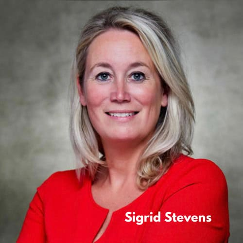
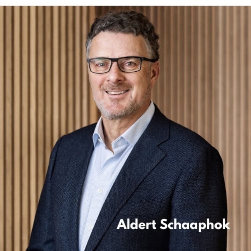
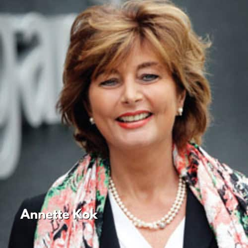
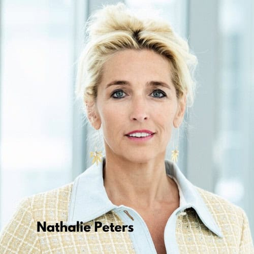
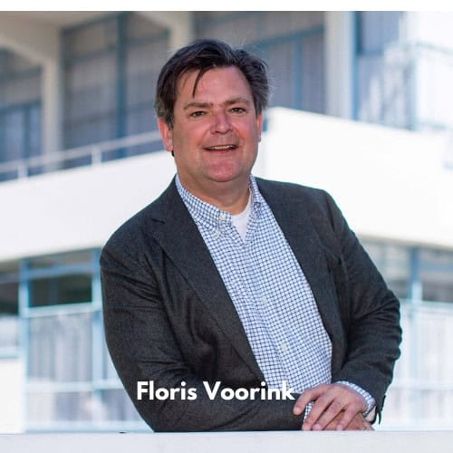

Raad van Toezicht
https://hartvanlaren.nl/over-ons/raad-van-toezicht/
Leden Raad van Toezicht Beheerstichting Hart van Laren.
Sigrid Stevens (voorzitter)
Aldert Schaaphok
- com/in/aldert-schaaphok-2a86676
- huidig boardmember at Pandox (international management voor hotelbranche)
- woonachtig in Laren
- portefeuille: hospitality, huisvesting, exploitatie en programmering
Annette Kok
- huidig vrijwilliger Brinkhuis
- adviseur en aandeelhouder JVH Gaming
- woonachtig in Blaricum
- portefeuille: hospitality, huisvesting en programmering
Nathalie Peters

Floris Voorink
- Wethouder economische zaken Hilversum
- Vertegenwoordiger gemeente Hilversum in het Bestuurlijk Overleg van GEM Crailo BV
- Vertegenwoordiger gemeente Hilversum in de AVA Vitens
- Lid van Economic Board Utrecht (EBU)
- Lid van ROM regio Utrecht
- Plaatsvervangend bestuurslid van het Goois Natuurreservaat (GNR)
- Lid Algemene Vergadering Metropool Regio Amsterdam (MRA)
- Lid MRA-Platform Economie (namens regio Gooi en Vechtstreek)
- Meer informatie

{kind=link}
{kind=link}
{kind=link}
{kind=link}
{kind=link}